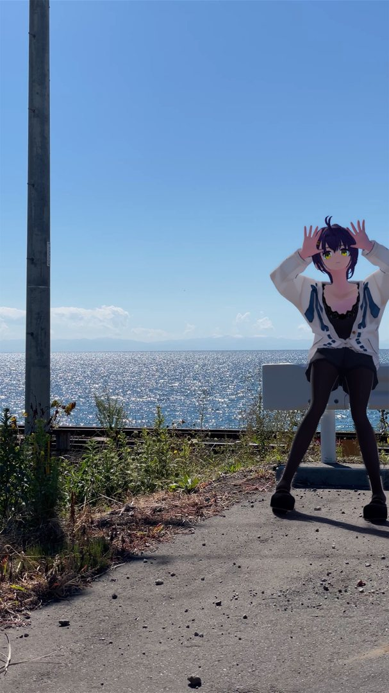

もう一つのプロジェクト
研究と並行して進めている、もう一つのプロジェクトの話です。
バーチャル観光VFXは、固定カメラで撮った観光地の実写映像に、トゥーン表現の3Dキャラクターを合成して、自治体や企業向けの観光PRにつなげる取り組みです。今回は、その「初期イメージ」として作った一枚を紹介します。

この一枚について
舞台は、青空ときらめく海が広がる海辺の風景です。手前には道とガードレール、その向こうに線路、そして海。そこにキャラクターの「巡」が立っています。
この一枚で大事にしたのは、派手な演出よりも「その場所に本当に立っている感じ」です。足元の影、光の向き、実写の空気感にキャラクターをどう馴染ませるか。トゥーン表現のキャラクターは実写と質感が大きく違うので、輪郭や色の置き方ひとつで、浮いて見えるかどうかが変わります。
最初の実例まで
プロジェクトは、まず Blender で最初の実例を作るところから始めました。実写にキャラクターを立たせて手を振る10秒の動画が最初の実例で、この静止画は、その世界観を一枚で伝えるための初期イメージです。「観光地の風景の中に、案内してくれるキャラクターがいる」――その第一印象を掴むための一枚、という位置づけです。
ここから先は、動きや馴染ませの仕上げを詰めながら、場所ごとに違う風景とキャラクターの組み合わせを増やしていきたいと思っています。研究の合間のプロジェクトですが、こちらも少しずつ形にしていきます。